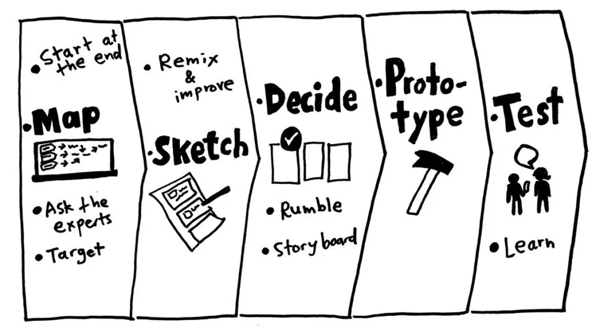

#4 The How
How was it approached?
Kickoff & Initial research:
Before we dove into a design sprint, we wanted to conduct some research on GIS in order to increase our understanding of the project itself and to set clear goals. After the Kickoff, we decided that the initial 4 weeks is going to be purely focused on research. So, we went into the research phase with a lot of curiosity and 4 very specific questions:
1. Who are our potential users?
2. What are the major pain points when users log GIS field data?
3. What are good & bad practices of our competitors?
4. What are our potential business models for the product?
Our main goal was to deepen our understanding of the GIS industry, laying the groundwork for actionable recommendations that would become the focus for the design sprints that follow.
Design sprints the GV way... aaalmost
After our initial research phase, we transitioned into a series of four design sprints. The first two were what we call “Validation Sprints,” inspired by the Google Ventures (GV) method but tweaked to fit our project needs and timelines. Each sprint lasted four to five weeks, focusing on rapid prototyping and user testing.

Map, Sketch, Decide, Prototype, Test: We followed the core steps of the GV method: mapping out the challenge, sketching solutions, deciding on the best ideas, prototyping them, and testing with users. We encouraged free-flowing creativity without any constraints. We believed in the power of diverse ideas and let our users and clients pick the concepts that resonated most with them through prototype-testing and deciding phases.
By the end of these validation sprints, we had two solid product concepts, each with a list of required features ready to be synced and refined in the next round of sprints.
When the GV design sprints fell short...
Working on a single product each sprint came with a few challenges:
1. Siloed Designs: The products ended up not integrating well with each other.
2. Evolving Project Goals: The project’s goals changed as we learned more, making it hard to stay aligned.
3. Loss of Insights: Valuable insights from earlier research were sometimes lost in the process.
While the GV design sprints are great for testing new ideas, at the end, you would still need to spend time to refine the ideas, package them and ship to development. To tackle these issues, I proposed we go back to the drawing board with the knowledge and feature lists we had gathered and work on refining the product for hand-off.
Here’s what we did:
• Sync and Refine: We worked on syncing and refining the products to ensure they complemented each other.
• Implement a Feedback Loop: We set up a continuous feedback loop to keep integrating user and client feedback.
• Finalize a Design System: We developed a cohesive design system to maintain consistency across both products.
This approach helped us consolidate our insights, stay aligned with evolving goals, and create a more integrated and user-friendly final product that was ready to be handed-off to developers.